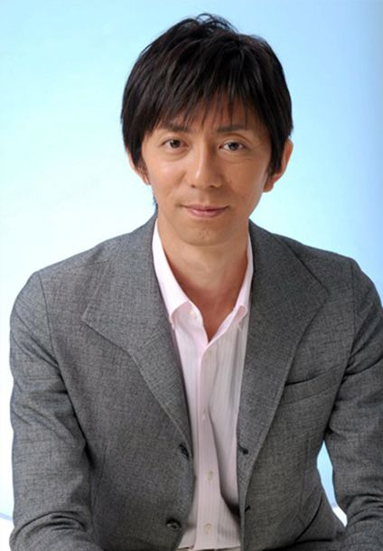
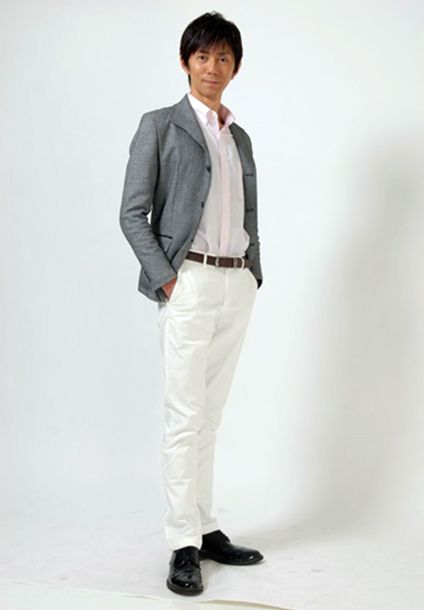

PROFILE
堀口 達哉




堀口 達哉Tatsuya Horiguchi
| カテゴリ | MC/司会、ナレーター、役者、モデル |
|---|---|
| 地域 | 関東 |
| 身長 | 180cm |
| 趣味 | フォークギター弾き語り、ピアノ、タップダンス、歌、ドライブ |
| 特技 | フリートーク、乗馬、スタント、殺陣（素手、ナイフ、日本刀、サイ、ヌンチャク）、バスケットボール |
| 資格 | 空手（全空連 初段）
斉藤真昭流古武術初伝 普通自動車第一種免許 |
| 参考URL | |
| 音声サンプル |
経歴
【MA】
- NTTデータ事業紹介VPナレーション
- JES工場紹介映像ナレーション
- 日本防犯システムVPナレーション
- データロボサイトセブンcm
- カストロール マグナテックオイルVP
- アサバンウォークVP
- 株式会社トーショーVP
- カイロプラクティック学習ビデオ吹き替え
- AIピッキングカート営業用販促VP
- エビス国際特許事務所50周年記念映像
- サンスタートニックシャンプーイベント用映像
【オンラインMC】
- LIXILグッドリビング研究所WEBセミナー
【記者発表会/イベント】
- LEXUS LSジャパンプレミア
- 海物語新機種発表会（はなわ、梨元勝、東海林のり子）
- モバイル放送主催"MUSIC☆モバHO!NIGHT!"（眞鍋かをり）
- 「CR相川七瀬」発表会（相川七瀬）
- 「NARUTO－ 疾風伝」声優竹内順子トークショー
- D-1グランプリ・シリーズチャンピオン今村陽一トークショー
- 自衛隊アイドル福島和可菜トークショー
- auコンペティション2009（flumpool）
- 日経就活ナビ（JYONGRI）
- マクドナルド「2013年ビックマック新プロジェクト」記者発表会（中山雅史）
- 猪木のびんたもついてるパック（アントニオ猪木）
- SONYブラビア新商品発表会
- ACT AGAINST AIDS 8 in 日本武道館
- トヨタ子供車教室 in 菅生サーキット
- エネルギー環境問題に関する中学生TV会議
- NTT東日本つながるお仕事見学会
【式典/表彰式/セミナー】
- Think Smart Factory 2019 IN KYOTO/スマートファクトリーゾーン
- たき工房社員表彰式、懇親パーティー2015～2016
- 富士変速機 開所式
- 国際自動車株式会社 開所式
- 獨協大学 竣工式
- サノフィ・アベンティス株式会社東日本物流センター 開所式
- コモンステージときわ 造成工事 起工式
- 川崎大規模太陽光発電所 起工式
- 株式会社銀しゃり府中工場 竣工式
【展示会】
- Japan IT Week秋2019/ワンコンパス
- 大塚商会 実践ソリューションフェア 2015～2019（東京・大阪）
- ダイコク電機 MIRAI GATE 2014～2018（東京・大阪・名古屋・福岡）
- 国際福祉機器展2013～2018/HONDA（東京・名古屋・大坂）
- IGAS2018/ホリゾンブースSmart Factory Zone 司会進行
- シーテック2018/立花エレテック
- リクシル・リフォームフェア2016（全国8会場）
- 東京・名古屋・大阪・福岡・札幌・仙台モーターショー2015/HONDA ステップワゴン＆オデッセイステージ
- 東京・名古屋・大阪・福岡・仙台モーターショー2013/HONDA N-WGNステージ
- リコージャパンValue Presentation
- シーテックジャパン/シャープ
- ITプロEXPO/富士ソフト
- キャンピングカーショー/HONDA
- ITS世界会議/三菱電機
- セキュリティーショー/ハンモック
- リテールテック/ドリームアーツ
- CP＋/ニコン
- ドラックストアショー/クラシエ
- 情報セキュリティーEXPO/シマンテック
- パナソニックディーラーズコンベンション
- Canon EXPO
- 設計製造ソリューション展
- インターフェックスジャパン
- アミューズメントエクスポ
- 東京ゲームショウ
- 東京オートサロン
- 名古屋オートメッセ
- インターロップ
- CATVショー
【役者】
- 東宝「ゴジラVSメカゴジラ」（Gフォース隊 関沢少尉役）主演・高嶋政宏
- 北野武監督作品「監督バンザイ！」主演・ビートたけし
- 中田圭監督作品「剣 TSURUGI/T S U R U G I：THE FUTURE SWORDSMAN」http://elementview.fc2web.com/start.htm（G6役、及びアクション監督）主演・加藤靖久
- 中田圭監督作品「クールガールズ 」（工作員役、及びアクション監督）主演・保阪尚希
- 中田圭監督作品「拳 FIST」（伝説の拳士フーチー役、及びアクション監督）船木壱輝
- ウェスタン村劇場用映画「吉本牧場の決闘」（ならず者役）主演・山田花子
- 「斎王郡行」（藤原資房役・主演、ナレーション）主演・堀口達哉
- 「神話の国 シルウァ」プローウェーレ役
- 「続・神話の国 シルウァ 」プローウェーレ役
【モーションキャプチャ】
- シェンムーアップルシード（劇場公開用映画 ブレアリオス役）
- コントラ（ＰＳ2ゲームオープニングムービー ビル・ライザー上等兵役）
- 女神転生パックスロマーナ（オクタビアヌス役 他多数）ストリートオブヒーロー
- その他作品、資料用モーションキャプチャー多数
【ドラマ/VP】
- NTV「刑事貴族」（警官役）主演・水谷 豊
- NTV「聖龍伝説」（幻龍拳からの刺客役）主演・安達祐実
- NTV「サイコメトラーEIJI」（チンピラ役）主演・松岡昌宏
- CX「甘い結婚」（出版社の営業部細井役）主演・木梨憲武
- CX「スマスマ・SMAPショートフィルム」（新婚夫婦役）主演・草なぎ剛（草彅剛）
- TBS「金曜日の恋人達へ」（HMVの店員役）主演・藤原紀香
- TBS「明智小五郎対怪人二十面相」（包帯の男｛若き日の怪人｝役）主演・田村正和
- 小峰隆生監督作品「強襲・RAID」（テロリスト役）
- ザ・コブラツイスターズ「運命船サラバ号出発」（侍役）
- 鈴木拓也監督作品「木刀刑事」（京天役・主役）
- カテキンスリム ドラマcm（開発主任 一条部長役）
【舞台】
- 平成12年8/9月 地球ゴージャス第4回公演「さくらのうた」（甲斐役）作・演出＝岸谷 五朗・寺脇 康文｛bunkamura・シアターコクーンand 大阪 シアタードラマシティ｝
- 平成13年12月 44Produce Unit“YAHOO”Vol,7「努力しないで出世する方法」作＝じんのひろあき 演出＝44Produce Unit｛中野・劇場MOMO｝
- 平成14年1月 44Produce Unit“YAHOO”Vol,8「努力しないで出世する方法」作＝中島淳彦、演出＝さわまさし｛下北沢・本多劇場｝
- 平成14年6月 44Produce Unit“YAHOO”Vol,9「INDY」作・演出＝藤井清美｛下北沢・ザ・スズナリ｝
- 平成15年4月 44Produce Unit“YAHOO”Vol,10「フツーの生活」作＝中島淳彦、演出＝さわまさし｛新宿 紀伊国屋ホール｝
- 平成15年6月 Office ＸＹＺ Produce Vol,1「里見八犬伝」作＝尾乃塚隆、演出＝堀口達哉｛中野 ウェストエンドスタジオ｝
- 平成15年8月 劇団 ANDENDLESS 「堕天・神殿」作・演出＝西田大輔｛六本木 俳優座劇場｝
- 平成16年3月 Office ＸＹＺ Produce Vol,2「水戸黄門」作＝尾乃塚隆、演出＝堀口達哉｛大塚 萬スタジオ｝
- 平成16年12月 Office ＸＹＺ Produce Vol,3「赤報隊」作＝堀口達哉・尾乃塚隆、演出＝堀口達哉｛中野ウェストエンドスタジオ｝
- 平成17年7月 Office ＸＹＺ Produce Vol,4「石川五右衛門」作＝尾乃塚隆、演出＝尾乃塚隆・堀口達哉｛中野ウェストエンドスタジオ｝
- 平成20年7月 Office ＸＹＺ Produce Vol,5「不都合な珍実～若きテロリストの独り言」作・演出＝堀口達哉｛三鷹・武蔵野芸能劇場｝